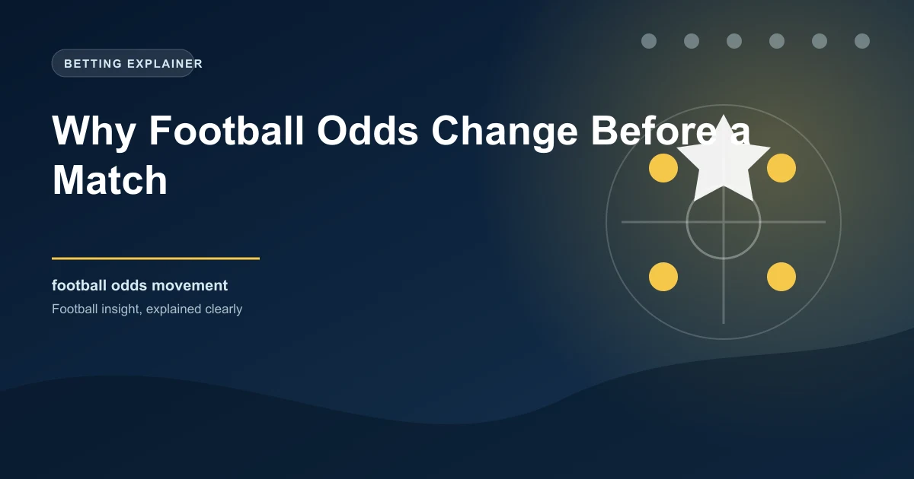

If you have ever checked the odds on a football match on Monday and then again on Saturday morning, you know they rarely stay the same. Odds fluctuate throughout the week, sometimes dramatically, and understanding why can help you time your bets more effectively and identify where value is being created or destroyed.
Odds movement is not random. It follows patterns driven by specific forces, and once you learn to read those forces, you gain an edge that most casual bettors completely overlook.
Football odds change for a handful of core reasons. Each one affects the market differently, and recognising which force is driving a particular movement is the key to using odds changes productively.
This is the single most common cause of significant odds movement in the days before a match. When a key player is ruled out through injury or suspension, the probability of their team winning decreases, and the odds adjust accordingly.
Before injury announcement: Arsenal 1.65, Draw 3.80, Brighton 5.00
Saka ruled out with hamstring injury: Arsenal 1.80, Draw 3.60, Brighton 4.33
Arsenal's odds lengthened from 1.65 to 1.80 because the probability of them winning decreased without their best attacker. Brighton's odds shortened from 5.00 to 4.33 because their probability of winning increased.
The magnitude of the odds shift depends on the importance of the player. A first-choice striker being ruled out might move the odds by 0.15-0.25. A backup goalkeeper being unavailable might not move the odds at all.
When large amounts of money are placed on one outcome, bookmakers adjust the odds to balance their liability. This is the bookmaker's core risk management tool, and it happens continuously across all markets.
Public money (from recreational bettors) tends to flow toward popular teams and outcomes. This is why odds on big clubs often shorten in the hours before kick-off, as casual bettors place their weekend wagers. Sharp money (from professional bettors) tends to come in earlier and can move markets significantly when a large wager is placed.
When odds shorten significantly in the early stages of a market (48-72 hours before kick-off), it often indicates sharp money has been placed. Recreational money tends to arrive closer to kick-off. Tracking early odds movements can help you identify where informed bettors are placing their money.
Weather affects football matches more than most bettors realise. Heavy rain, strong wind, and extreme heat all influence the style of play and the likely number of goals.
When a club changes manager, the odds on their matches can shift dramatically. New managers often bring an immediate uplift in performance (the "new manager bounce"), and the market adjusts to reflect this possibility.
The timing of the managerial change matters. A change made a week before a match gives the new manager time to implement ideas, which the market tends to price in more fully. A change made 48 hours before a match creates uncertainty, which can actually lengthen the odds because the market cannot assess the impact yet.
The most volatile odds movement happens in the 60-90 minutes before kick-off when starting lineups are announced. A unexpected formation change, a surprise inclusion, or a key player being rested can cause rapid odds adjustments across multiple markets.
Manchester City announce Haaland on the bench for a Champions League tie, resting him for the weekend league match. City's 1X2 odds lengthen, over 2.5 goals odds shorten (because City are less likely to score freely without Haaland), and both teams to score odds may shift depending on the opponent's attacking threat.
Odds movement is not just something that happens to you. It is information you can use. Here is how to turn odds fluctuations into a betting advantage.
Not all odds movements are created equal. Understanding the difference between a steam move and a cosmetic move helps you avoid chasing false signals.
A steam move occurs when odds shorten (or lengthen) rapidly across multiple bookmakers simultaneously, driven by sharp money or significant new information. Steam moves are significant because they indicate a genuine shift in the market's assessment of the probability.
A cosmetic move is a small odds adjustment that occurs at a single bookmaker, often in response to their own liability management rather than a genuine change in the probability. These moves are less significant and should not drive your betting decisions.
The way to distinguish between the two is to check whether the odds movement is reflected across multiple bookmakers. If one bookmaker shortens a team from 2.00 to 1.85 while others remain at 2.00, it is likely cosmetic. If three or four bookmakers simultaneously shorten the same team to 1.85-1.90, it is likely a steam move.
Odds follow a general pattern of movement from market opening to kick-off, and understanding this pattern helps you identify the optimal time to place your bets.
In the final hours before kick-off, odds on popular teams often shorten due to recreational money flowing in. This "recreational drift" can create value on the underdog or the draw, as the market becomes temporarily overvalued on the favourite. If your analysis suggests the favourite is not as strong as the public believes, the final hours before kick-off can offer the best odds on the opposing side.
The most practical way to use odds movement is to set up a system for tracking your target markets. Record the opening odds, note any significant movements, and investigate the reason behind each shift. Over time, you will develop an intuition for which movements are significant and which are noise.
This skill takes practice, but it is one of the most valuable tools in a bettor's arsenal. The market is constantly absorbing new information and adjusting its assessment. If you can stay ahead of that adjustment, or identify when the market has over-adjusted, you have found a genuine edge.
Compare our 1X2 predictions against the current market odds to identify where value exists in today's fixtures.
 Win
Win